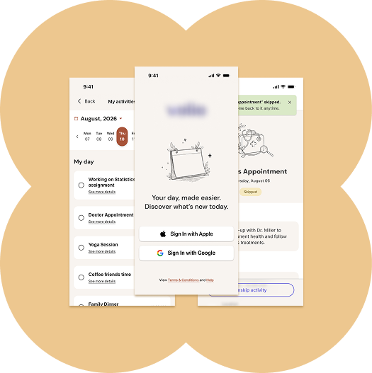
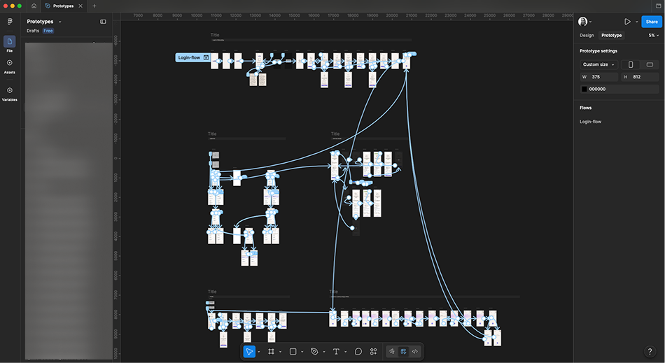
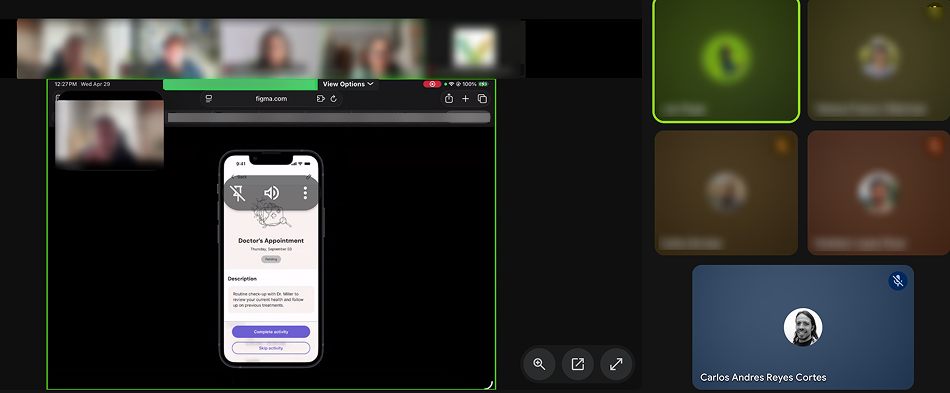
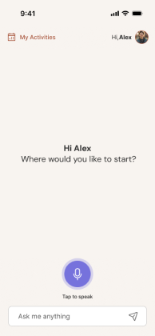
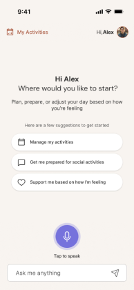
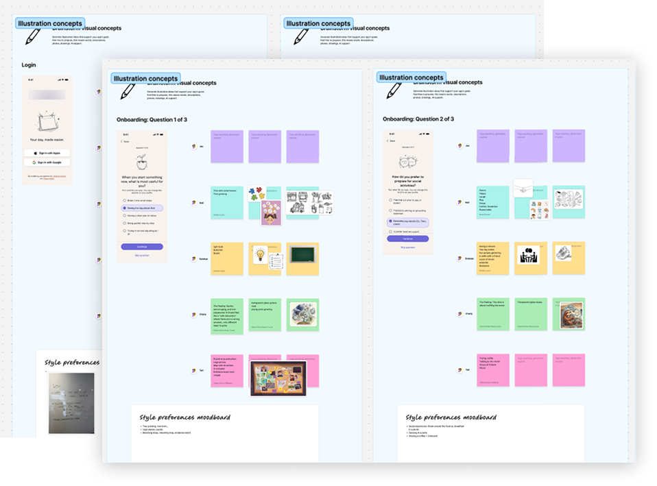
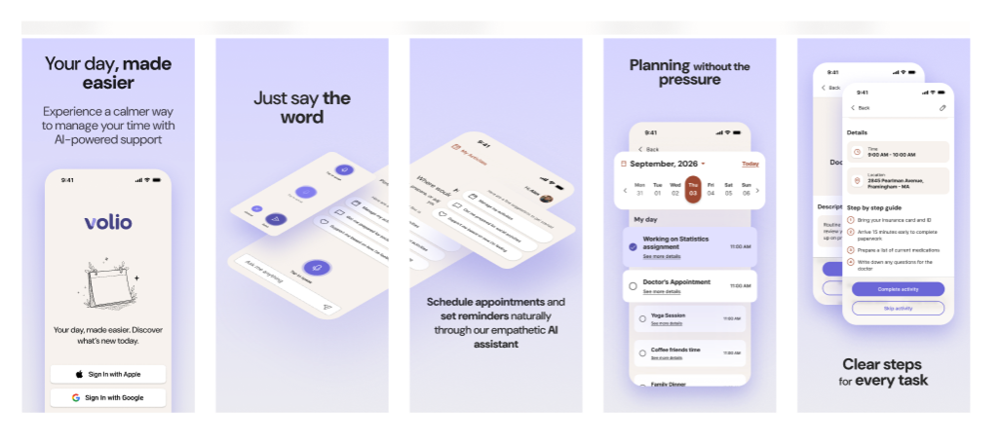

NeuroSync Project
2026
NeuroSync empowers neurodivergent individuals to overcome executive dysfunction and task paralysis through a radically predictable mobile ecosystem. Built as a low-stimulus environment, the platform integrates AI-driven task scaffolding and emotional state tracking to deliver routine calm for an initial multi-thousand user base.
Role
As UX/Visual Designer, I headed up the end-to-end prototyping phase to rapidly validate design concepts, inclusive testing methodologies, and storefront strategies, collaborating with cross-functional teams to translate user insights into technical product requirements.

1. Problem
Standard productivity applications fundamentally reject neurodivergent cognitive users. Opaque information architecture and high-stimulus digital noise trigger severe executive dysfunction, time-blindness, and task paralysis—driving rapid product abandonment among users navigating ADHD, Autism, and cognitive overload.
2. Solution
A. Prototyping
Drove the development of high-fidelity interactive prototypes tailored specifically to eliminate unnecessary cognitive load. By simplifying complex interface layouts and optimizing navigation paths during the design phase, I ensured the user flows were entirely optimized for accessible interaction before moving into live testing.


B. Mirror Usability Testing
Helped carry out an innovative "mirror testing" environment to validate these prototypes. By eliminating the traditional "observer effect," this framework allowed neurodivergent participants to interact with the interface naturally and stress-free, capturing highly accurate, unskewed behavioral data.
Node 01
User
Interacts without being observed
Node 02
Moderator / Note-Taker
Live logging · without interrupting
Node 03 · Mirror Room
Friction Log
You: flag questions, silences and blocks
The mirror room removes the observer effect: the participant behaves naturally while friction is logged in real time by the design team behind the glass.

Before — high cognitive loadThe user freezes, unsure which path to take to start interacting with the assistant.

After — single focusSupport chips surface possible paths, reducing the anxiety of deciding where to start.
C. Designing for Cognitive Accessibility
Collaborative ideation sessions were headed up to establish an accessible, psychologically grounded in-app illustration framework. These visuals were utilized as intuitive signposts throughout the interface, whereby cognitive friction was successfully reduced and complex journeys were made to feel safe and predictable.

Every token in the system was audited before shipping: contrast ratios were computed against WCAG 2.2, component states were documented in full, and the type scale was locked to a two-font pairing that keeps long-form reading calm and predictable.
Color & Contrast
Body on Surface/Default
#2A2A2A
Link on Surface/Default
#A75339
Button/Primary label
#FFFFFF on #7672DC
Component States — Button/Primary
bg #7672DC · label #FFFFFF
2px ring · border-default #7672DC
bg #625FB7 · label #D5D3FF
bg #C6C6C6 · label #717171
Typography Scale — DM Sans + Inter
Heading 24px
Body 16px — calm, long-form readable copy for low-stimulus reading.
Caption 12px
The information architecture follows a three-step scaffold: a single raw sentence is captured without structure, decomposed by predictable business rules, and returned as one clean, low-stimulus action — the user never faces the full backlog at once.
Raw Input
Chaotic input
“I have to clean the whole apartment and buy groceries.”
Voice or text capture · 1 single sentence, 42 pending items
AI Scaffolding Engine
Business rule
Breaks the massive task into micro-steps under 15 min
Assigns a predictable timer per step
Filters out secondary environmental stimuli
Low-Stimulus UI Output
Solution
Today · Step 1
Take out the trash
Clean card · zero notifications · a single action

D. Optimizing the App Store Experience
Validated UI layouts were translated into high-impact storefront screenshots and visual assets for both the App Store and Google Play. Consequently, a cohesive, trustworthy, and inclusive first touchpoint was established, which immediately resonated with the target audience and allowed user acquisition to be streamlined.
Impact
- The mirror testing framework eliminated participant anxiety, resulting in near-perfect session completion and securing exceptionally rich, clean qualitative data for the development pipeline.
- Optimized marketing layouts and storefront screenshots were delivered ahead of schedule, guaranteeing full platform compliance and visual alignment well before the official product launch.
- Accessible visual storytelling and tailored layouts drastically cut cognitive friction for neurodivergent testers, proving the prototype will drive high adoption and engagement at launch.
Learnings
This project deepened my expertise in neuroinclusive design and ethical research. I learned that accessibility extends beyond WCAG checklists—it requires reinventing feedback methodologies themselves. Designing for specialized user demographics taught me to balance deep user empathy with structured, data-driven execution, reshaping how I build inclusive products that respect diverse cognitive needs without compromising technical feasibility.